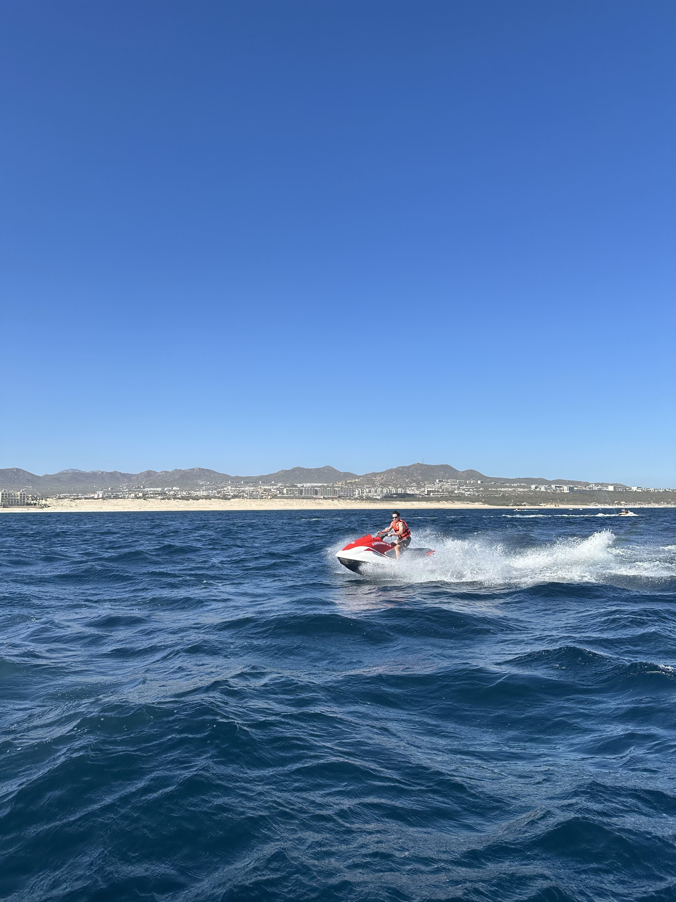
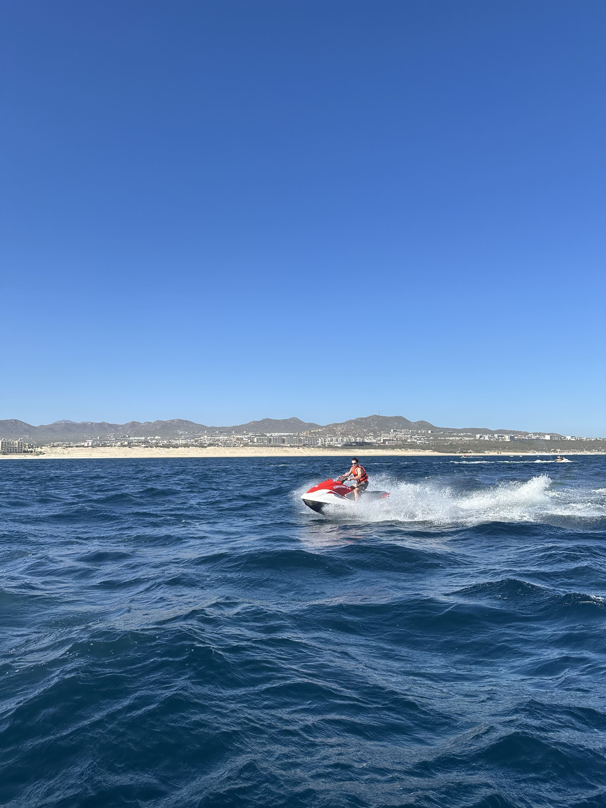

A little about me
Hello, my name is Kiko and I am a recent graduate from the Cockrell School of Engineering at UT Austin, where I received my B.S. in Electrical and Computer Engineering with a specialization in Software Engineering and Design and a minor is Business Administration.
My main academic and career interests lie in back-end software development, mobile computing, artificial intelligence/machine learning, and entrepreneurship; my technical background stems from various independent and group based engineering projects within Cockrell, ranging from embedded systems video games to poem generating software applications. Down the road, I hope to find a position where I may fulfill both my engineering and business interests while making a meaningful impact in the field of technology.
In addition to studying at the University of Texas, I have ventured out by taking courses at the University of California, Los Angeles, as well as in Barcelona, Greece, and Paris. I am extremely passionate about technology and innovation, while being considered a hard-working, determined individual who will go above and beyond to find any solution.
Currently, I am seeking a software engineering internship position.


 
